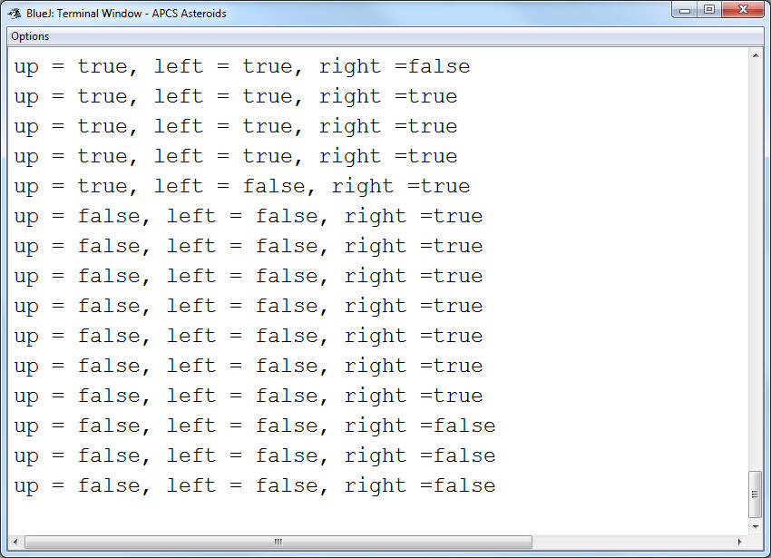

Reading the State of the Keys
As we go further with our game, listening to keys will become more important for controlling our spaceship.
The Problem:
The way that the KeyboardListener works is that it only calls the methods when the keys are pressed or released. Holding one key down will call the method repeatedly (like when you hold a letter down while typing). The issue arrives when you try to press multiple keys at once it will stop calling the method, even if you're still holding the key. This means that we will not be able to accelerate and turn at the same time.
The Solution:
With a little bit of trickery we can keep track of which keys are being held down. Add three booleans to the AsteroidsBoard as instance fields: up, left, and right. Our goal is to have these values be true for as long as the keys are being pressed.
If you think about it, this means that the boolean needs to be switched to true when key is pressed, and set back to false when it's released. Luckily we have a method that is called in each of those cases.
Go to the onKeyPress method and add the following code:
if( keyCode == 37) left = true;
37 is the keyCode for the left arrow key. When this key is pressed, the boolean left will be set to true. We don't want this boolean to be true for the rest of time, so go to the onKeyRelease and add the following code:
if( keyCode == 37) left = false;
The combination of these two statements will cause pressing the left arrow to make the boolean true, until it's released and set back to false. Repeat this strategy for the up (keyCode 38) and right (keyCode 39).
To test if this is working properly, add a System.out.println to the step method that prints out a String stating the variable and what it's value is. For example: it might print out "up = false, left = true, right = false" if the left key is being pressed.
Run the program and hold each of the arrow keys, observing to make sure that they are true as long as you're holding each of them. Test out holding multiple keys at the same time also. Once you know that this works properly, remove the println.
